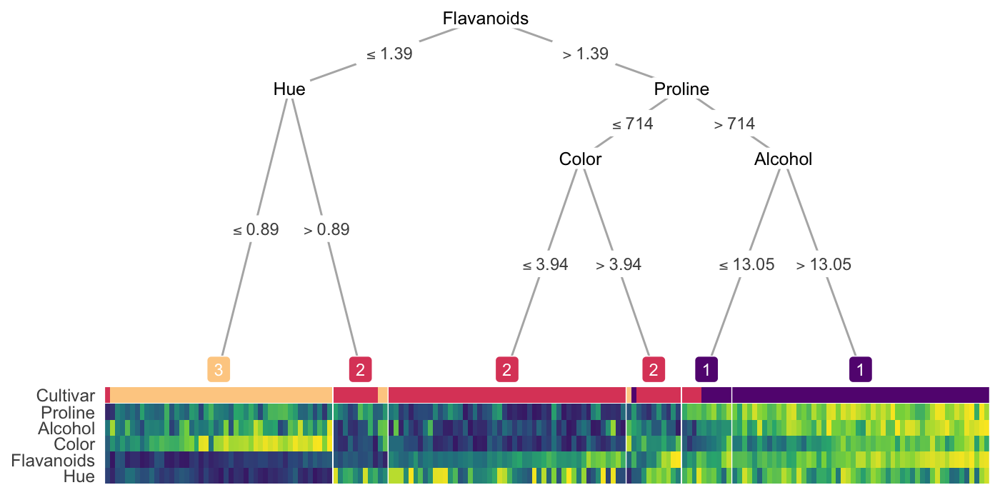
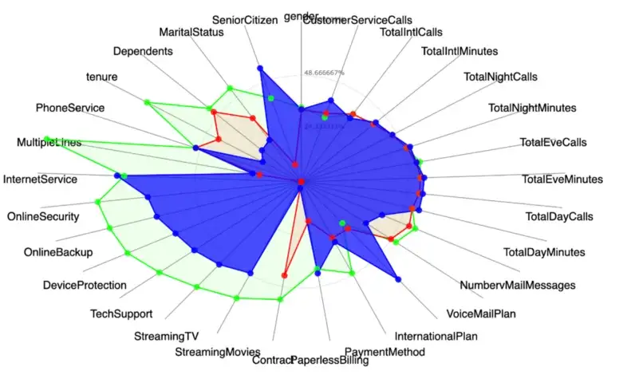
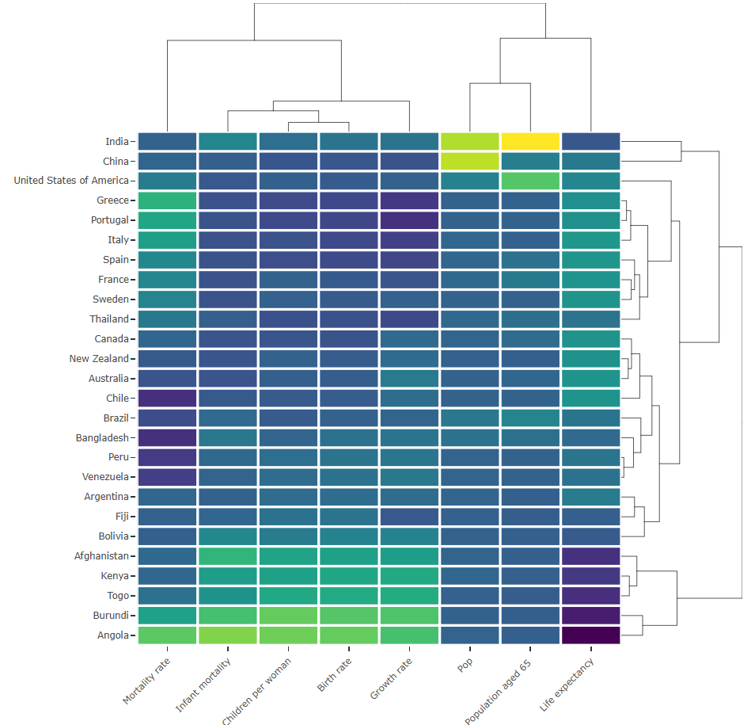

General
Misc
- Also see
- Notebook, pgs 57-58
- Diagnostics, Clustering
- Packages
- {anticlust} - Partitions a pool of elements into clusters (or anticlusters) with the goal of achieving high between-cluster similarity and high within-cluster heterogeneity.
- {clustord} - Cluster Ordinal Data via Proportional Odds or Ordered Stereotype
- {CompositionalClust} - Cluster analysis with compositional data using the alpha–transformation
- {FPDclustering} - Probabilistic distance clustering (PD-clustering) is an iterative, distribution-free, probabilistic clustering method.
- PD-clustering assigns units to a cluster according to their probability of membership under the constraint that the product of the probability and the distance of each point to any cluster center is a constant.
- PD-clustering is a flexible method that can be used with elliptical clusters, outliers, or noisy data.
- {MSCA} - Clustering of Multiple Censored Time-to-Event Endpoints
- Computes Jaccard distances between instances described by one or more records of events
- {PLNmodels} - Poisson Lognormal Models
- Clustering of multivariate count data with PLN-mixture
- {qVarSel} - Select Variables for Optimal Clustering
- Implements an optimization method to find the variables that most separate units between clusters. In this way, masking variables can be discarded from the data frame and the clustering is more accurate.
- {torch-deeptype} (Paper, Article) - Uses both supervised and unsupervised components to find subclusters within known clusters.
- The supervised part guides the learning toward known clusters/groups, while the clustering component is free to subdivide these into more distinct, homogeneous groups — subject to maintaining classification performance.
- Resources
- Applied Machine Learning Using mlr3 in R, Ch.13.4
- “Clustering algorithms always find clusters if you tune their similarity and grouping enough. Unfortunately, clusters by themselves have no inherent meaning. Only understanding the data and the algorithm can lend meaning to the clusters. To make a clustering project well defined, start by knowing what the data means. It’s especially important to know about the process that generates the data points. Based on understanding, you can form a hypothesis about the relationships that might exist between points. An algorithm with thoughtfully chosen parameters can either confirm or deny that hypothesis.” (source)
- For static data, i.e., if the values do not change with time, clustering methods are usually divided into five major categories:
- Partitioning (or Partitional)
- Hierarchical
- Density-Based
- Grid-Based
- Model-Based Methods
- Biclustering (aka Two-Mode Clustering)
- Simultaneously clusters the rows and columns of an (\(n×p\))-dimensional data matrix \(Y\), with rows associated to \(n\) statistical units and columns consisting of \(p\) ordinal outcomes.
- Packages
- {biclustermd} - Biclustering with Missing Data
- {MixSim} - Simulating Data to Study Performance of Clustering Algorithms
- {twomodeclusteringGA} - Genetic Algorithm Based Two-Mode Clustering
- Tools for fitting, visualization, and validation of two-mode cluster structures in data matrices
- Papers
- Use Cases
- Analysis of political votes
- The voting records of \(n\) politicians on \(p\) legislative bills are only available for the sessions they attended, where absence from a session may represent a deliberate political strategy.
- Recommendation systems
- The data consists of customer (\(n\)) ratings on \(p\) items.
- In the well-known Netflix Prize data, missingness arises when users choose not to rate certain movies, potentially reflecting their lack of interest, preference, or other underlying factors
- Analysis of political votes
Terms
- Cluster Centroid - The middle of a cluster. A centroid is a vector that contains one number for each variable, where each number is the mean of a variable for the observations in that cluster. The centroid can be thought of as the multi-dimensional average of the cluster.
- Hard (or Crisp) Clustering - each point belongs to a single cluster
- Soft (or Fuzzy) Clustering - each point is allowed to belong to multiple clusters
Cluster Descriptions
Packages
- {clustereval} - Compute the statistical association between the features and the detected cluster labels and whether they are significant.
- Categorical: Chi-Square, Fisher’s Exact, or Hypergeometric tests
- Continuous: Mann-Whitney-U test
- {clustree} - For interrogating clusterings as resolution increases. Allows you to see how samples move as the number of clusters increases.
- Builds a clustering tree that visualizes the relationships at a range of resolutions.
- {parameters} - Provides various functions for describing, analyzing, and visualizing clusters for various methods
- Examine variable values at the centroids of each cluster
- A higher absolute value indicates that a certain variable characteristic is more pronounced within that specific cluster (as compared to other cluster groups with lower absolute mean values).
- {clustereval} - Compute the statistical association between the features and the detected cluster labels and whether they are significant.
Distributional statistics for each cluster
- Numeric variables: mean and sd for each variable in that cluster
- Categorical variables:
- binary: percent where event = 1
- multinomial: most prominent category
Run a decision tree on clusters
.png)
- Each color (orange, blue, green, purple) represents a cluster
- Explains how clusters were generated
- Issue
- Suboptimal Labels: A depth of 3 might be sufficient to fully represent the cluster boundaries, but CART might only achieve 100% accuracy when using a depth of 5 or 6. This is because of the greedy nature of the decision tree algorithms.
- {treeheatr}

Radar charts
- 3 clusters: blue (highlighted), red, green
- Guessing the mean values for each variable are the points
Scatter
Interpetable Clustering
- Notes from Introduction to Interpretable Clustering
- Overview of methods with references to papers
- Instead of fitting a classifier in a supervised manner after clustering, clusters are directly constructed using a model.
- Unsupervised Clustering Trees - Trees are constructed by optimizing a variety of clustering metrics through various optimization algorithms
- Others: Specialized Neural Networks, Polytope Machines, and Rectangular Rules
- Notes from Introduction to Interpretable Clustering
{kind=link}
{kind=link}
{kind=link}
Gaussian Mixture Models (GMM)
Misc
TipPackages- {mclust} - Gaussian Mixture Modelling for Model-Based Clustering, Classification, and Density Estimation
- EBook: Model-Based Clustering, Classification, and Density Estimation Using mclust in R
- JOSS: Model-based Methods of Classification: Using the mclust Software in Chemometrics
- Website: mclust.org
- Lists other packages from the group that are associated with GMMs.
- Hands-On Machine Learning with R, Ch. 22 (mclust tutorial)
- {mixtools} (Vignette) - Provides computational techniques for finite mixture model analysis in which components are regressions, multinomial vectors arising from discretization of multivariate data, or even distributions that are almost completely unspecified.
- Mixtures of parametric distributions (normal, multivariate normal, multinomial, gamma)
- Various Reliability Mixture Models (RMMs),
- Mixtures-of-Regressions settings (linear regression, logistic regression, Poisson regression, linear regression with changepoints, predictor-dependent mixing proportions, random effects regressions, hierarchical mixtures-of-experts)
- Tools for selecting the number of components (bootstrapping the likelihood ratio test statistic, mixturegrams, and model selection criteria)
- Bayesian estimation of mixtures-of-linear-regressions models is available as well as a novel data depth method for obtaining credible bands.
- {EMCluster} - EM Algorithm for Model-Based Clustering of Finite Mixture Gaussian Distribution
- Much of it is in C, so it should be fast
- {flexmix} - A general framework for finite mixtures of regression models using the EM algorithm is implemented.
- Existing drivers implement mixtures of standard linear models, generalized linear models and model-based clustering.
- Video: Extending flexmix to model-based clustering with sparse data
- {otrimle}
- Uses Improper Maximum Likelihood Estimator Clustering (IMLEC) method
- Hyperparameters automatically tuned; Outliers removed
- Robust gaussian mixture clustering algorithm
- Webpage has links to paper, Coretto and Hennig, 2016
- {pivmet} (JOSS) - Pivotal methods for consensus clustering in k-means and mixture modeling. Method mitigates label-switching problem that occurs during Bayesian estimation of mixture models
- {foldcluster} (Paper) - Bayesian Clustering via Fusing of Localized Densities
- Addresses GMM kernel misspecification problem. Clustering results are highly sensitive to kernel misspecification. For example, if Gaussian kernels are used but the true density of data within a cluster is even slightly non-Gaussian, then clusters will be broken into multiple Gaussian components.
- {plotmm} - Tidy Tools for Visualizing Mixture Models. Currently supports: mixtools, flexmix, and EMCluster models
- {SSLfmm} - Semi-Supervised Learning under a Mixed-Missingness Mechanism in Finite Mixture Models
- Models both missing completely at random (MCAR) and entropy-based missing at random (MAR) processes using a logistic–entropy formulation
- Data simulation, model estimation, prediction, and theoretical Bayes error evaluation for analysing partially labelled data under a mixed-missingness mechanism
- {telescope} - Fits Bayesian finite mixtures with an unknown number of components using the telescoping sampler and different component distributions
- Mixture Latent Class Analysis
- Univariate and Multivariate Gaussian Mixtures, Poisson Mixtures
- Soft clustering algorithm
- Notes from
- Resources
- {mclust} - Gaussian Mixture Modelling for Model-Based Clustering, Classification, and Density Estimation
Components of the Algorithm
- “Color” points according to gaussians (clusters)
- The closer a point is to the center of a gaussian the more intensely it matches the color of that gaussian
- Points in between gaussians are a mixture or proportion of the colors of each gaussian
.png)
- Fitting a Gaussian
- Find the center of mass
- 2-dim: calculate the mean of x and the mean of y and that’s the coordinates of your center of mass
- Find the spread of the points
2-dim: calculate the x-variance, y-variance, and covariance
.png)
- First Equation: Height of Gaussian (Multivariate Gaussian distribution equation).
- Second Equation: 1-D gaussian equation that’s just being used for reference
Partially “colored” points affect spread and center of mass calculations
- Fully colored points “weigh” more than partially colored points and pull the center of mass and change the orientation
.png)
- Fully colored points “weigh” more than partially colored points and pull the center of mass and change the orientation
- Find the center of mass
- “Color” points according to gaussians (clusters)
Steps
- Start with random Gaussians
- Each gaussian has random means, variances
- Color points according to distance to the random gaussians
- The heights in the distributions pic above
- (Forget about old gaussians) Calculate new gaussians based on the colored points
- (Forget about old colors) Color points according to distance to the new gaussians
- Repeat until some threshold is reached (i.e. gaussians or colors don’t change much)
- Start with random Gaussians
Tuning
- Initial Conditions (i.e. Good starting points for the random gaussians at the beginning)
- Limits on the mean and variance calculations
- Number of gaussians, k, can be chosen by minimizing the Davies-Bouldin score
- See Diagnostics, Clustering >> Spherical/Centroid Based >> Davies-Bouldin Index
- Running algorithm multiple times
- Like CV grid search algs or bootstrapping
Hierarchical
- Misc
- Packages
- {heatmaply} (Vignette, Examples) - Visualizes Hierarchical Clustering via Heatmap
- Options for the clustering function for both axes or each individual axis.
- Default is
stats::hclustbut the introductory vignette also showedfastcluster::hclustis capable of being used. I didn’t see anything other than the default used in the other examples
- Default is
- Distance methods (through
hclust): “euclidean” (Default), “maximum”, “manhattan”, “canberra”, “binary” or “minkowski”. - Linkage methods (through
hclust): “complete” (Default), “ward.D”, “ward.D2”, “single”, “average” (= UPGMA), “mcquitty” (= WPGMA), “median” (= WPGMC) or “centroid” (= UPGMC)
- Options for the clustering function for both axes or each individual axis.
- {pandemonium} - Performs hierarchical cluster analysis within a Shiny GUI.
- {heatmaply} (Vignette, Examples) - Visualizes Hierarchical Clustering via Heatmap
- Resources
- Packages
- Linkages
- Maximum or complete linkage clustering: Computes all pairwise dissimilarities between the elements in cluster 1 and the elements in cluster 2, and considers the largest value of these dissimilarities as the distance between the two clusters. It tends to produce more compact clusters.
- Minimum or single linkage clustering: Computes all pairwise dissimilarities between the elements in cluster 1 and the elements in cluster 2, and considers the smallest of these dissimilarities as a linkage criterion. It tends to produce long, “loose” clusters.
- Mean or average linkage clustering: Computes all pairwise dissimilarities between the elements in cluster 1 and the elements in cluster 2, and considers the average of these dissimilarities as the distance between the two clusters. Can vary in the compactness of the clusters it creates.
- Centroid linkage clustering: Computes the dissimilarity between the centroid for cluster 1 (a mean vector of length p, one element for each variable) and the centroid for cluster 2.
- Ward’s minimum variance method: Minimizes the total within-cluster variance. At each step the pair of clusters with the smallest between-cluster distance are merged. Tends to produce more compact clusters.
- Examples
Example: {heatmaply} (source)
Code
p <- heatmaply( mat, #dendrogram = "row", xlab = "", ylab = "", main = "", scale = "column", margins = c(60,100,40,20), grid_color = "white", grid_width = 0.00001, titleX = FALSE, hide_colorbar = TRUE, branches_lwd = 0.1, label_names = c("Country", "Feature:", "Value"), fontsize_row = 5, fontsize_col = 5, labCol = colnames(mat), labRow = rownames(mat), heatmap_layers = theme(axis.line=element_blank()) ) # save the widget # library(htmlwidgets) # saveWidget(p, file= "~/Desktop/R-graph-gallery/HtmlWidget/heatmapInter.html")- For the data, see the first example in the source article
- The right dendogram checks which countries tend to have the same features on their numeric variables, and therefore which countries are similar
- Burundi and Angola (bottom) are grouped together. This grouping can be examined using the heatmap where it’s shown they are two countries in strong expansion, with a lot of children per woman but still a strong mortality rate.
- From the top dendogram clusters the features
- It shows birth rate and children per woman (left) are grouped together since they are highly correlated.
{kind=link}
Latent Profile Analysis (LPA)
Sort of like k-means + GMM
k number of profiles (i.e. clusters) are chosen
Model outputs probabilities that an observation belongs to any particular cluster
GOF metrics available
“As with Exploratory Factor Analysis (EFA )(and other latent-variable models), the assumption of LPA is that the latent (unobserved) factor”causes” (I’m using the term loosely here) observed scores on the indicator variables. So, to refer back to my initial hypothetical example, a monster being a spell caster (the unobserved class) causes it to have high intelligence, low strength, etc. rather than the inverse. This is a worthwhile distinction to keep in mind, since it has implications for how the model is fit.”
Bin variables that might dominate the profile. This way the profiles will represent a latent variable and not gradations of the dominate variable (e.g. low, middle, high values of the dominate variable).
Center other variable observations according to dominant variable bin those observations are in. (e.g. subtract values in bin1 from bin1’s mean)
# From D&D article where challenge_rating is a likely dominant variable mons_bin <- mons_df %>% mutate(cr_bin = ntile(x = challenge_rating, n = 6)) ab_scores <- c("strength", "dexterity", "constitution", "intelligence", "wisdom", "charisma") mons_bin <- mons_bin %>% group_by(cr_bin) %>% mutate(across(.cols = ab_scores, .fns = mean, .names = "{.col}_bin_mean")) %>% ungroup()
tSNE
- Packages
- {Rtsne}
- t-Distributed Stochastic Neighbor Embedding
- Looks at the local distances between points in the original data space and tries to reproduce them in the low-dimensional representation
- Both UMAP and tSNE attempt to do this but fails (Lior Pachter paper thread, Doesn’t preserve local structure, No theorem says that it preserves topology)
- Results depend on a random starting point
- Tuning parameters: perplexity
UMAP
- Packages:
- {umap}
- {polarisR} - A ‘shiny’ application for visualizing, exploring, and model comparison of high-dimensional data using non-linear dimensionality reduction (NLDR) techniques such as t-SNE and UMAP
- {quollr} - Visualising How Nonlinear Dimension Reduction Warps Your Data
- Tools to visualise the model overlay the data in 2-D and high-dimensional space.
- Summaries and diagnostics to evaluate the nonlinear dimension reduction layout.
- {scDEED} (article) - Detects Dubious t-SNE and UMAP Embeddings and Optimizes Hyperparameters
- scDEED assigns a reliability score to each 2D embedding to indicate how much the data point’s mid-range neighbors change in the 2D space. Observations whose 2D embedding neighbors have been drastically changed through the embedding process are called ‘dubious.’
- {SaturnCoefficient} - A metric expressing the quality of a UMAP layout
- Range: [0, 1]
- Higher value means better dimensionality reduction
- Uniform Manifold Approximation and Projection (variation of tSNE) which projects variables to a nonlinear space
- Issues
- See tSNE section for Lior Pachter threads on why not to use tSNE or UMAP
- Two dimensions are not enough to predict with high accuracy. This isn’t an issue if our goal is exploratory data analysis (EDA). However, if we over-interpret this as evidence of discrete clusters defined solely by their position in the two-dimensional scatter plot, we risk drawing incorrect conclusions.
- There are no weights like in PCA determine which variables are contributing the most to each dimension.
- Computationally intensive
- Preprocessing
- Only for numeric variables
- Standardize
- Differences with tSNE
- Random starting point has less of an impact that in tSNE
- Can be supervised (give it an outcome variable)
- UMAP can take a training model and apply it to test data or new data
- Try pca first
- If successful (good separation between categories), then prediction may be easier
- If not, umap, tsne needed
- Tuning parameter: neighbors
- Example used 500 iterations (n_epochs) as limit for convergence
K-Means
- {biganalytics::bigkmeans} - Memory-efficient k-Meaans. Requires no extra memory (beyond the data, other than recording the cluster memberships), whereas
kmeansmakes at least two extra copies of the data- If nstart>1 and you are using
bigkmeansin parallel, a vector of cluster memberships will need to be stored for each worker, which could be memory-intensive for large data. This isn’t a problem if you use are running the multiple starts sequentially. - Unless you have a really big data set (where a single run of kmeans not only burns memory but takes more than a few seconds), use of parallel computing for multiple random starts is unlikely to be much faster than running iteratively.
- If nstart>1 and you are using
- {bootkmeans} - A Bootstrap Augmented k-Means Algorithm for Fuzzy Partitions. Implementation of the bootkmeans algorithm, a bootstrap augmented k-means algorithm that returns probabilistic cluster assignments
- {clusterHD} (Paper) - Regularized k-Means through hard thresholding
- Uses a \(\mathcal{L}_0\) penalty to induce sparsity in the variables
- {ClusterR} - Consists of Gaussian mixture models, k-means, mini-batch-kmeans, k-medoids and affinity propagation clustering algorithms with the option to plot, validate, predict (new data) and find the optimal number of clusters.
- {kkmeans} - Fast Implementations of Kernel K-Means
- ‘OTQT’ algorithm (default) is a fast alternative to standard implementations of kernel k-means, particularly in cases with many clusters.
- ‘MacQueen’ method for small numbers of clusters
- {fkms} (Paper) - k-means clustering for sparsely observed longitudinal data (i.e. repeated measure of multiple numeric variable over time)
- Normal k-means or mixture models can’t be applied to unbalanced/irregular designs where time and measurement differ for each subject. These methods also ignore autocorrelation.
- Also applicable to densely observed data
- Employs the basis function expansion (i.e. splines) to model the cluster centers
- {KQM} - K Quantiles Medoids (KQM) clustering applies quantiles to divide data of each dimension into K mean intervals.
- Comparison between KQM and the method of randomly selecting initial cluster centers shows that KQM is almost always getting clustering results with smaller total sum squares of distances.
- {pivmet} (JOSS) - Pivotal methods for consensus clustering in k-means and mixture modeling
- {RelativeDistClust} - Clustering with a Novel Non Euclidean Relative Distance
- This might be for clustering vectors via disSsimilarity distances.
- Implementation of the Hartigan and Wong methods to accommodate alternative distance metrics
- k-medoids algorithm is implemented, offering a robust alternative for clustering without the need of computing cluster centers under the chosen metric.
- All three methods are designed to support Relative distances, Euclidean distances, and any user-defined distance functions.
- {RobPC} - Performs both classical and robust panel clustering by applying Principal Component Analysis (PCA) for dimensionality reduction and clustering via standard K-Means or Trimmed K-Means.
- {sparcl} - Sparse Hierarchical Clustering and Sparse K-Means Clustering
- {tidyclust} - Clustering for tidymodels
- Engines
- stats and ClusterR run classical K-means
- laR runs K-Modes models which are the categorical analog to K-means, meaning that it is intended to be used on only categorical data
- clustMixType to run K-prototypes which are the more general method that works with categorical and numeric data at the same time.
- Engines
- Seeks to assign n points to k clusters and find cluster centers so as to minimize the sum of squared distances from each point to its cluster center.
- Papers
- Wasserstein k-Centres Clustering for Distributional Data
- Distributional data arises when each data point can be regarded as a probability distribution
- Examples of a distributional data set include age distributions of countries and house price distributions of cities.
- The real data example was classifying 84= 42 (Austrian districts × 2 (men and women) age distributions into two groups with several clustering methods and determine whether the clustering results reflect gender differences.
- Wasserstein k-Centres Clustering for Distributional Data
- For choosing the number of clusters, elbow method (i.e. WSS) is usually awful if there are more than few clusters. Recommended: Calinski-Harabasz Index and BIC then Silhouette Coefficient or Davies-Bouldin Index (See Diagnostics, Clustering >> Spherical/Centroid Based (article)
- Base R
kmeansuses the Hartigan-Wong algorithm- For large k and larger n, the density of cluster centers should be proportional to the density of the points to the power (d/d+2). In other words the distribution of clusters found by k-means should be more spread out than the distribution of points. This is not in general achieved by commonly used iterative schemes, which stay stuck close to the initial choice of centers.
- Issues
- Inefficient in distinguishing between groups of unbalanced sizes. See Packages >> {pivmet} which uses consensus clustering to help mitigate this.
- Arguments
- nstart - Number of times to run the algorithm. The run with the lowest total within cluster SSE (in feature space) will be returned
- Examples
Example 1: Mixed K-Means, {tidyclust}
Model and Extract Centroids
library(tidymodels) library(tidyclust) data("ames", package = "modeldata") kproto_spec <- k_means(num_clusters = 3) %>% set_engine("clustMixType") kproto_fit <- kproto_spec %>% fit(~ ., data = ames) kproto_fit %>% extract_centroids() %>% select(11:20) %>% glimpse() #> Rows: 3 #> Columns: 10 #> $ Lot_Config <fct> Inside, Inside, Inside #> $ Land_Slope <fct> Gtl, Gtl, Gtl #> $ Neighborhood <fct> College_Creek, North_Ames, Northridge_Heights #> $ Condition_1 <fct> Norm, Norm, Norm #> $ Condition_2 <fct> Norm, Norm, Norm #> $ Bldg_Type <fct> OneFam, OneFam, OneFam #> $ House_Style <fct> Two_Story, One_Story, One_Story #> $ Overall_Cond <fct> Average, Average, Average #> $ Year_Built <dbl> 1989.977, 1953.793, 1998.765 #> $ Year_Remod_Add <dbl> 1995.934, 1972.973, 2003.035
Example 2: Classic K-Means (article, code)
Preprocess and Fit
recipe_kmeans <- recipe(~ ., data = data_prep_tbl) %>% step_dummy(all_nominal_predictors(), one_hot = TRUE) %>% step_normalize(all_numeric_predictors()) %>% step_rm("ID") recipe_kmeans %>% prep() %>% juice() %>% glimpse() model_kmeans <- k_means(num_clusters = 4) %>% set_engine("stats") set.seed(123) wflw_fit_kmeans <- workflow() %>% add_model(model_kmeans) %>% add_recipe(recipe_kmeans) %>% fit(data_prep_tbl)Visualize
g <- data_prep_tbl %>% bind_cols(extract_cluster_assignment(wflw_fit_kmeans), .) %>% ggplot(aes(Spent, Income)) + geom_point( aes(fill = .cluster), shape = 21, alpha = 0.3, size = 5 ) + geom_smooth(color = "blue", se = FALSE) + scale_x_continuous(labels = scales::dollar_format()) + scale_y_continuous( labels = scales::dollar_format(), limits = c(0, 200000) ) + labs(title = "Customer Clusters: Spent vs Income") + scale_fill_tq() + theme_tq() ggplotly(g)- See Cluster Descriptions >> Scatter for the output
Example 3: PCA + K-Means
The Ames, Iowa real estate dataset.
Given the lack of separation between clusters, PCA doesn’t seem to have been helpful with this data. I probably wouldn’t trust any sort of inference from this analysis, but it was still a worthwhile exercise.
pacman::p_load( dplyr, ggplot2 ) notebook_colors <- unname(swatches::read_ase(here::here("palettes/Forest Floor.ase"))) data(ames, package = "modeldata") tib_ames_clean <- ames |> select(where(is.numeric), -starts_with("Year"), -Longitude, -Latitude) |> janitor::clean_names() |> mutate(across(everything(), ~as.numeric(scale(.x)))) glimpse(tib_ames_clean) #> Rows: 2,930 #> Columns: 29 #> $ lot_frontage <dbl> 2.48816746, 0.66724154, 0.69709278, 1.05530772, 0.48813407, 0.60753905, -0.4969… #> $ lot_area <dbl> 2.74391236, 0.18706533, 0.52272448, 0.12843602, 0.46726775, -0.02156364, -0.663… #> $ mas_vnr_area <dbl> 0.06103563, -0.56594277, 0.03864354, -0.56594277, -0.56594277, -0.45398234, -0.… #> $ bsmt_fin_sf_1 <dbl> -0.97497145, 0.81604193, -1.42272479, -1.42272479, -0.52721810, -0.52721810, -0… #> $ bsmt_fin_sf_2 <dbl> -0.2938681, 0.5574871, -0.2938681, -0.2938681, -0.2938681, -0.2938681, -0.29386… #> $ bsmt_unf_sf <dbl> -0.26862520, -0.65766778, -0.34825380, 1.10553692, -0.96025646, -0.53481223, 0.… #> $ total_bsmt_sf <dbl> 0.065184701, -0.383827454, 0.629851503, 2.400955004, -0.279511498, -0.284046975… #> $ first_flr_sf <dbl> 1.26678711, -0.67252822, 0.43237117, 2.42527284, -0.59087284, -0.59597630, 0.45… #> $ second_flr_sf <dbl> -0.7830517, -0.7830517, -0.7830517, -0.7830517, 0.8532859, 0.7995972, -0.783051… #> $ gr_liv_area <dbl> 0.309212281, -1.194223205, -0.337660619, 1.207317164, 0.255800757, 0.206345643,… #> $ bsmt_full_bath <dbl> 1.0841906, -0.8214353, -0.8214353, 1.0841906, -0.8214353, -0.8214353, 1.0841906… #> $ bsmt_half_bath <dbl> -0.2491777, -0.2491777, -0.2491777, -0.2491777, -0.2491777, -0.2491777, -0.2491… #> $ full_bath <dbl> -1.0246180, -1.0246180, -1.0246180, 0.7838945, 0.7838945, 0.7838945, 0.7838945,… #> $ half_bath <dbl> -0.7550738, -0.7550738, 1.2344642, 1.2344642, 1.2344642, 1.2344642, -0.7550738,… #> $ bedroom_abv_gr <dbl> 0.1760642, -1.0320576, 0.1760642, 0.1760642, 0.1760642, 0.1760642, -1.0320576, … #> $ kitchen_abv_gr <dbl> -0.2072561, -0.2072561, -0.2072561, -0.2072561, -0.2072561, -0.2072561, -0.2072… #> $ tot_rms_abv_grd <dbl> 0.3541063, -0.9173783, -0.2816360, 0.9898486, -0.2816360, 0.3541063, -0.2816360… #> $ fireplaces <dbl> 2.1618110, -0.9249854, -0.9249854, 2.1618110, 0.6184128, 0.6184128, -0.9249854,… #> $ garage_cars <dbl> 0.3071569, -1.0066675, -1.0066675, 0.3071569, 0.3071569, 0.3071569, 0.3071569, … #> $ garage_area <dbl> 0.25717905, 1.19589661, -0.74659815, 0.22929635, 0.04341168, -0.01235372, 0.508… #> $ wood_deck_sf <dbl> 0.9199643, 0.3659983, 2.3681895, -0.7419335, 0.9357919, 2.1070341, -0.7419335, … #> $ open_porch_sf <dbl> 0.21437202, -0.70437244, -0.17090791, -0.70437244, -0.20054483, -0.17090791, -0… #> $ enclosed_porch <dbl> -0.3587768, -0.3587768, -0.3587768, -0.3587768, -0.3587768, -0.3587768, 2.29171… #> $ three_season_porch <dbl> -0.1031167, -0.1031167, -0.1031167, -0.1031167, -0.1031167, -0.1031167, -0.1031… #> $ screen_porch <dbl> -0.2853057, 1.8542134, -0.2853057, -0.2853057, -0.2853057, -0.2853057, -0.28530… #> $ pool_area <dbl> -0.06302029, -0.06302029, -0.06302029, -0.06302029, -0.06302029, -0.06302029, -… #> $ misc_val <dbl> -0.08940702, -0.08940702, 21.98197299, -0.08940702, -0.08940702, -0.08940702, -… #> $ mo_sold <dbl> -0.44798097, -0.07958798, -0.07958798, -0.81637397, -1.18476697, -0.07958798, -… #> $ sale_price <dbl> 0.428155666, -0.948794572, -0.110106700, 0.791169819, 0.113960657, 0.184059942,…- Data gets standardized for PCA
- Other transformations such as square root for discrete variables and logging for skewed contiuous variables are recommended, but I didn’t worry about that here. (See Feature Reduction, General >> PCA >> Preprocessing)

res_pca <- prcomp(tib_ames_clean) # Examine PCA results summary(res_pca) #> Importance of components: #> PC1 PC2 PC3 PC4 PC5 PC6 PC7 PC8 PC9 PC10 PC11 PC12 #> Standard deviation 2.4863 1.7095 1.40974 1.22278 1.12376 1.0662 1.04472 1.02899 1.00785 0.98740 0.97548 0.95180 #> Proportion of Variance 0.2132 0.1008 0.06853 0.05156 0.04355 0.0392 0.03764 0.03651 0.03503 0.03362 0.03281 0.03124 #> Cumulative Proportion 0.2132 0.3139 0.38246 0.43402 0.47756 0.5168 0.55440 0.59091 0.62594 0.65956 0.69237 0.72361 #> PC13 PC14 PC15 PC16 PC17 PC18 PC19 PC20 PC21 PC22 PC23 #> Standard deviation 0.94808 0.94242 0.91673 0.89735 0.83861 0.79782 0.78170 0.75752 0.68673 0.6506 0.56640 #> Proportion of Variance 0.03099 0.03063 0.02898 0.02777 0.02425 0.02195 0.02107 0.01979 0.01626 0.0146 0.01106 #> Cumulative Proportion 0.75460 0.78523 0.81421 0.84198 0.86623 0.88817 0.90925 0.92903 0.94529 0.9599 0.97095 #> PC24 PC25 PC26 PC27 PC28 PC29 #> Standard deviation 0.52549 0.42321 0.41130 0.34717 0.30648 0.05873 #> Proportion of Variance 0.00952 0.00618 0.00583 0.00416 0.00324 0.00012 #> Cumulative Proportion 0.98048 0.98665 0.99249 0.99664 0.99988 1.00000 # Scree plot tib_scree <- tibble( pc = paste0("PC", 1:ncol(tib_ames_clean)), variance = (res_pca$sdev^2 / sum(res_pca$sdev^2)) * 100, cum_var = cumsum(variance) ) ggplot(tib_scree, aes(x = factor(pc, levels = pc), y = variance, label = paste0(round(cum_var, 1), "%"))) + geom_bar(stat = "identity", fill = notebook_colors[[2]]) + geom_line(aes(group = 1), color = notebook_colors[[5]]) + geom_point(color = notebook_colors[[5]], size = 3) + geom_label(vjust = 0, nudge_y = 0.75) + labs(title = "Scree Plot", x = "Principal Component", y = "% Variance Explained") + theme_notebook(axis.text.x = element_text(angle = 45, hjust = 1)) # Choose enough components that explain ~80-90% of variance n_components <- which(summary(res_pca)$importance[3,] >= 0.90)[[1]] mat_pca_sub <- res_pca$x[, 1:n_components] mat_pca_dist <- dist(mat_pca_sub)- By looking at the
summaryor the scree plot, we can see that PC1 only accounts around 21.3% of the variance, and it begins to level off around PC8. - This is disappointing as PCA doesn’t seem to have been able to reduce our number of predictors very much. I’m going to keep enough PCs that amount to 90% of the information which means 19 PCs.
set.seed(2026) # fit model for each k and collect stats tib_clust_stats <- purrr::map(2:n_components, \(k) { res_km <- kmeans(mat_pca_sub, centers = k, iter.max = 20, nstart = 25) tib_cs <- fpc::cluster.stats( mat_pca_dist, res_km$cluster)[c("cluster.number", "within.cluster.ss", "avg.silwidth", "ch")] |> as_tibble() |> # Davies-Bouldin mutate(db_idx = clusterSim::index.DB(x = mat_pca_sub, cl = res_km$cluster)$DB) return(tib_cs) }) |> purrr::list_rbind() head(tib_clust_stats) #> # A tibble: 6 × 5 #> cluster.number within.cluster.ss avg.silwidth ch db_idx #> <int> <dbl> <dbl> <dbl> <dbl> #> 1 2 65977. 0.168 499. 2.42 #> 2 3 61327. 0.153 380. 2.53 #> 3 4 58092. 0.128 321. 2.45 #> 4 5 55236. 0.133 291. 2.22 #> 5 6 52865. 0.138 270. 1.98 #> 6 7 50230. 0.145 262. 1.86 # Select final k based on Calinski-Harabasz k <- tib_clust_stats |> filter(ch == max(ch)) |> pull(cluster.number) # fit final model res_kmeans <- kmeans( mat_pca_sub, centers = k, nstart = 25 ) # add Cluster assingments and PCs to original data tib_ames_clust <- ames |> select( where(is.numeric), -starts_with("Year"), -Longitude, -Latitude) |> janitor::clean_names() |> mutate( cluster = factor(res_kmeans$cluster), pc1 = res_pca$x[, 1], pc2 = res_pca$x[, 2]) # cluster sizes table(res_kmeans$cluster) #> 1 2 #> 1202 1728- From my reading, the Calinski-Harabasz Index, Silhouette Coefficient, or Davies-Bouldin Index work best with K-Means (See Diagnostics, Clustering >> Spherical/Centroid based)
- Not sure, if these values are the same as described in that notebook section. I don’t think it matters too much in this case though after seeing that there really wasn’t any separation possible given the data (See next section) and only 1 reasonable \(k\) (2).
- Trying to find a simple plug and play cluster diagnostic package is difficult. None seem to have been written recently (or with decent documentation), and most require you to use the same package to perform the clustering.
Clusters in PC Space

Code
ggplot(tib_ames_clust, aes(x = pc1, y = pc2, color = cluster)) + geom_point(size = 2, alpha = 0.6) + stat_ellipse(level = 0.95, linewidth = 1) + labs(title = "Ames, Iowa Properties", subtitle = "Clustered in Principal Component Space", x = paste0("PC1 (", round(tib_scree$variance[1], 1), "% var)"), y = paste0("PC2 (", round(tib_scree$variance[2], 1), "% var)")) + theme_notebook( legend.position = "bottom", palette.color.discrete = notebook_colors[c(7, 9)])- There is no separation of the clusters. It looks like, out of desparation, that k-means decided to just split the baby.
- In cluster 1, there might be some layering that could indicate other valid potential clustering patterns, but I didn’t check what k = 3 or 4 looked like.
- There are also a few (or many?) outliers which makes me wonder if there’s any localization going on. (See Feature Reduction, General >> PCA >> Diagnostics)
Biplot

Code
# create 3 sections in the scatter plot tib_sects <- as_tibble(res_pca$rotation[, 1:2], rownames = "variable") |> janitor::clean_names() |> mutate(sects = case_when( pc1 >= 0 ~ "right", pc1 < 0 & pc2 < 0 ~ "lower", pc1 < 0 & pc2 >= 0 ~ "upper" )) table(tib_sects$sects) #> lower right upper #> 10 3 16 # partition a little of each section to create 6 groups # for facetting in the biplot tib_biplot <- tib_sects |> group_by(sects) |> mutate(row_id = row_number()) |> ungroup() |> mutate( group = case_when( # Group 1 sects == "lower" & row_id <= 2 ~ 1, sects == "upper" & row_id <= 3 ~ 1, # Group 2 sects == "lower" & between(row_id, 3, 4) ~ 2, sects == "upper" & between(row_id, 4, 6) ~ 2, # Group 3 sects == "lower" & between(row_id, 5, 6) ~ 3, sects == "upper" & between(row_id, 7, 9) ~ 3, # Group 4 sects == "lower" & between(row_id, 7, 8) ~ 4, sects == "upper" & between(row_id, 10, 12) ~ 4, # Group 5 sects == "lower" & between(row_id, 9, 10) ~ 5, sects == "upper" & between(row_id, 13, 15) ~ 5, # Group 6 sects == "upper" & row_id == 16 ~ 6, sects == "right" & row_id <= 3 ~ 6, TRUE ~ NA ) ) |> select(-row_id) |> filter(!is.na(group)) # scale arrows for visibility arrow_scale <- 5 ggplot(tib_ames_clust, aes(x = pc1, y = pc2, color = cluster)) + geom_point(alpha = 0.1, size = 1) + geom_segment(data = tib_biplot, aes(x = 0, y = 0, xend = pc1 * arrow_scale, yend = pc2 * arrow_scale), arrow = arrow(length = unit(0.3, "cm")), color = "black", linewidth = 0.8, inherit.aes = FALSE) + ggrepel::geom_text_repel( data = tib_biplot, aes(x = pc1 * arrow_scale, y = pc2 * arrow_scale, label = variable), color = "black", size = 4, fontface = "bold") + facet_wrap(~group) + labs(title = "Biplot: Clusters + Original Variable Loadings", subtitle = "Arrows show how original variables relate to PC1 and PC2") + theme_notebook( legend.position = "bottom", palette.color.discrete = notebook_colors[c(7, 9)])- See Feature Reduction, General >> PCA >> Plots >> Bi-Plot
- A single bipot was completely unintelligible, so I tried to separate variables into multiple biplots in hopes of making them more interpretable.
- I probably should have just used the “key variables” (next section) instead of trying include all of them in these biplots, but I think a lot of the issue is the lack of separation between the clusters.
Cluster Profiles
Code
# take the medians of variables for each cluster # calculate the percent difference of those medians between clusters # select the top 8 variables tib_key_vars <- tib_ames_clust |> select(-pc1, -pc2) |> group_by(cluster) |> summarize(across(where(is.numeric), median), .groups = "drop") |> tidyr::pivot_longer( cols = where(is.numeric), names_to = "variable", values_to = "value" ) |> tidyr::pivot_wider( names_from = "cluster", values_from = "value" ) |> mutate(pct_diff_cluster = abs((`1` - `2`) / `1`)) |> slice_max(pct_diff_cluster, n = 8) tib_ames_clust |> group_by(cluster) |> summarize(med_sale_price = median(sale_price), med_lot_area = median(lot_area), med_bedrooms = median(bedroom_abv_gr)) #> # A tibble: 2 × 4 #> cluster med_sale_price med_lot_area med_bedrooms #> <fct> <dbl> <dbl> <dbl> #> 1 1 226000 10912. 3 #> 2 2 136400 8450 3 key_vars <- tib_key_vars$variable tib_profile <- tib_ames_clust |> select(all_of(key_vars), cluster) |> tidyr::pivot_longer( cols = -cluster, names_to = "variable", values_to = "value" ) ggplot(tib_profile, aes(x = cluster, y = value, fill = cluster)) + geom_boxplot(median.color = notebook_colors[2], median.linewidth = 1.25, box.color = NA) + labs(title = "Cluster Profiles on Key Original Features", x = "Cluster", y = "Value") + facet_wrap(~variable, scales = "free_y", ncol = 4) + theme_notebook( axis.text.x = element_blank(), axis.ticks.x = element_blank(), strip.text = element_text(size = 14), legend.position = "bottom", palette.color.discrete = notebook_colors[c(7, 9)])- For each cluster, the median was calculated for each variable.
- Then, the percent difference in median value between cluster 1 and cluster2 for each variable was calculated, and the top 8 variables in magnitude were chosen.
- Fireplaces and full_bath (and maybe 1 or 2 others) seem to have low variance and I possibly should’ve replaced those with different variables.
{kind=link}
DBSCAN
{kind=link}
- Misc
- Notes from:
- Understanding DBSCAN and Implementation with Python
- Clustering with DBSCAN, Clearly Explained video
- Packages
- {dbscan}- A fast C++ (re)implementation of several density-based algorithms with a focus on the DBSCAN family for clustering spatial data
- DBSCAN: Density-based spatial clustering of applications with noise
- Jarvis-Patrick Clustering: Clustering using a similarity measure based on shared near neighbors
- SNN Clustering: Shared nearest neighbor clustering
- HDBSCAN: Hierarchical DBSCAN with simplified hierarchy extraction
- FOSC: Framework for optimal selection of clusters for unsupervised and semisupervised clustering of hierarchical cluster tree
- OPTICS/OPTICSXi: Ordering points to identify the clustering structure and cluster extraction methods
- {parameters}
n_clusters_dbscan- Given a “min_size” (aka minPts?), the function estimates the optimal “eps”cluster_analysis- Shows Sum of Squares metrics and the (standardized) mean value for each variable within each cluster.
- {dbscan}- A fast C++ (re)implementation of several density-based algorithms with a focus on the DBSCAN family for clustering spatial data
- HDBSCAN is the hierarchical density-based clustering algorithm
- Use Cases
- Geospatially Clustering Earthquakes
- Events can occur in irregular shaped clusters (i.e., along faults of different orientations).
- Events can occur in different densities (i.e. some fault zones are more active than others).
- Events can occur far away from fault zones (i.e. outliers)
- Geospatially Clustering Earthquakes
- Notes from:
- Tuning
- eps - The maximum distance between two samples for one to be considered to be connected to the other
- Large eps tend to include more points within a cluster,
- Too-large eps will include everything in the same single cluster
- Too-small eps will result in no clustering at all
- minPts (or min_samples) - The minimum number of samples in a neighborhood for a point to be considered as a core point
- Too-small minPts is not meaningful because it will regard every point as a core point.
- Larger minPts can be better to deal with noisy data
- eps - The maximum distance between two samples for one to be considered to be connected to the other
- Algorithm
- For each data point, find the points in the neighborhood within eps distance, and define the core points as those with at least minPts neighbors.
.1.png)
- The orange circle represents the eps area
- If minPts = 4, then the top 4 points are core points because they have at least 4 points overlapping the eps area
- Define groups of connected core points as clusters.
.2.png)
- All the green points have been labelled as core points
- Assign each non-core point to a nearby cluster if it’s directly reachable from a neighboring core point, otherwise define it as an outlier.
.png)
- The black points are non-core points but are points that overlap the eps area for the outer-most core points.
- Adding these black points finalizes the first cluster
- This process is repeated for the next group of core points and continues until all that’s left are outliers.
- For each data point, find the points in the neighborhood within eps distance, and define the core points as those with at least minPts neighbors.
- Advantages
- Doesn’t require users to specify the number of clusters.
- Not sensitive to outliers.
- Clusters formed by DBSCAN can be any shape, which makes it robust to different types of data.
- Example: Nested Cluster Structure
- K-Means
.png)
- K-Means wants spherical clusters which makes it grab groups of points it shouldn’t
- DBSCAN
.png)
- Able correctly identify the oblong shaped cluster
- K-Means
- Example: Nested Cluster Structure
- Disadvantages
- If the data has a very large variation in densities across clusters because you can only use one pair of parameters, eps and MinPts, on one dataset
- It could be hard to define eps without the domain knowledge of the data
- Clusters not totally reproducible. Clusters are defined sequentially so depending on which group of core points the algorithm starts with and hyperparameter values, some non-core points that are within the eps area of multiple clusters may be assigned to different clusters on different runs of the algorithm.
Mixed Variable Types
- Packages
- {DIBclust} (see paper) Deterministic Information Bottleneck (DIB) clustering
- Preserves the most relevant information while forming concise and interpretable clusters, guided by principles from information theory
- {kamila} - KAMILA clustering, a novel method for clustering mixed-type data in the spirit of k-means clustering.
- It does not require dummy coding of variables, and is efficient enough to scale to rather large data sets.
- {FactoMineR} - Multivariate Exploratory Data Analysis and Data Mining
- Has function for FAMD with K-Means approach
- {clustMixType} (Vignette) - Performs k-prototypes partitioning clustering for mixed variable-type data
- {cluster} - Can use for PAM w/Gower’s Dissimilarity mixed type clustering
- First compute the dissimilarity matrix using
daisy(df, metric = "gower"). Then use that dissimilarity matrix as input forpam(matrix, k, diss = TRUE).
- First compute the dissimilarity matrix using
- {GowerSom} - Implements a variant of the Self-Organizing Map (SOM) algorithm designed for mixed-attribute datasets
- {DIBclust} (see paper) Deterministic Information Bottleneck (DIB) clustering
- Papers
- A Deterministic Information Bottleneck Method for Clustering Mixed-Type Data
- Introduces {DIBclust}
- Compares the Deterministic Information Bottleneck (DIB) method to KAMILA, K-Prototypes, Factor Analysis for Mixed Data (FAMD) with K-Means, and PAM using Gower’s dissimilarity
- Used Adjusted Rand Index to compare cluster method results with the ground truth.
- Simulation Data
- DIBmix outperforms the other methods in a majority of scenarios with the only exception being when the proportion of categorical variables is high. Alternative bandwidth choices could potentially enhance performance in these cases.
- FAMD performed best with a high proportion of categorical variables probably due to its data reduction step.
- It was only slightly better than DIBmix. The other methods were substantially worse.
- Unlike the other methods, DIBmix effectively handles datasets with unbalanced cluster sizes.
- This robustness arises from the entropy term in its objective function, which minimises for imbalanced clusters, thus allowing exploration of diverse partition structures
- Real Data Sets
- Out of 10 datasets for the UCI Repository, DIBmix and K-Prototypes each had 4 best scores. Kamila and PAM each had 1. The results given the characteristics of the datasets were in-line with the results of the simulated data.
- A Deterministic Information Bottleneck Method for Clustering Mixed-Type Data